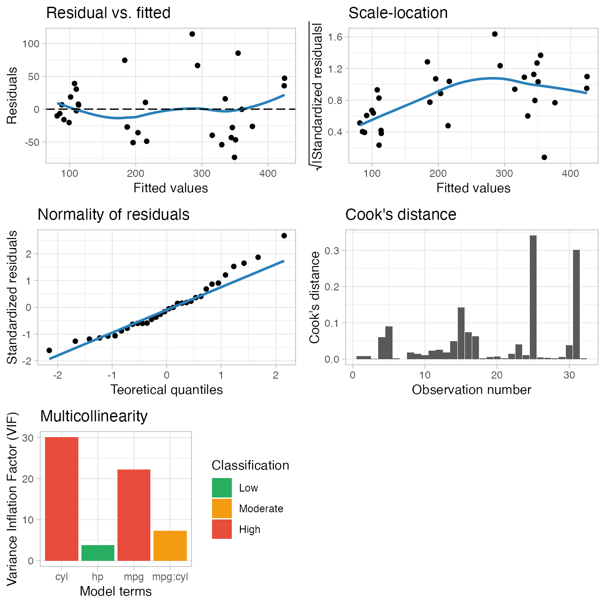
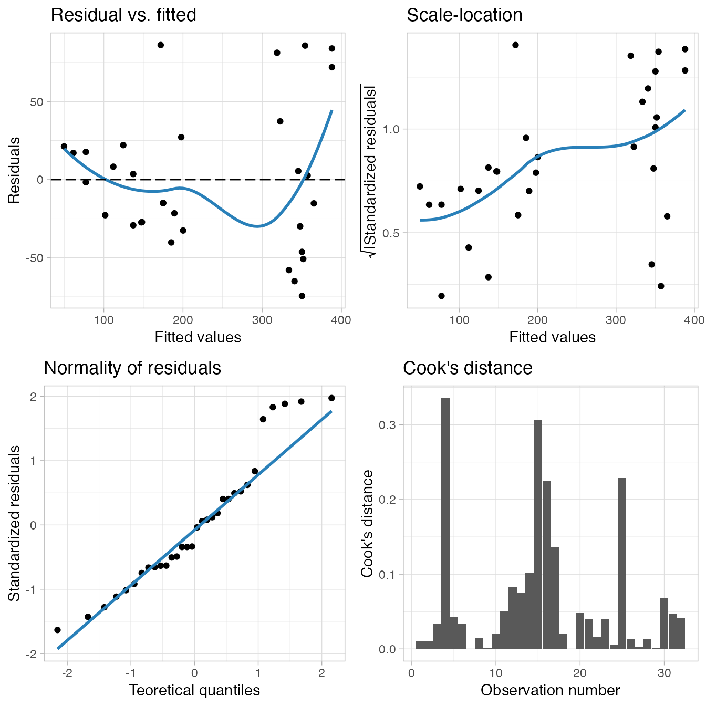

{lvmisc} has a set of tools to work with model objects. Currently, the supported model classes are lm from the {stats} package and lmerMod from the {lme4} package. If you would like to have methods implemented to other model classes, please file an issue at https://github.com/verasls/lvmisc/issues.
The functions to work with models can be divided into three categories:
Before starting, let’s load the required packages:
{lvmisc} has a plotting method for some common model diagnostic plots. To explore it, let’s first create some example models:
The main function here is plot_model() and its only argument is a model object:
plot_model(m1)
plot_model(m2)
The default plots shown are, respectively:
plot_model_residual_fitted() function.plot_model_scale_location() function also generates this plot.plot_model_qq() also builds this plot.plot_model_cooks_distance() can be used to show this plot.m2). The VIF can be used to check the model for multicollinearity: the bar is green for a low multicollinearity, orange for moderate and red for high. The plot_model_multicollinearity() function can generate this plot.